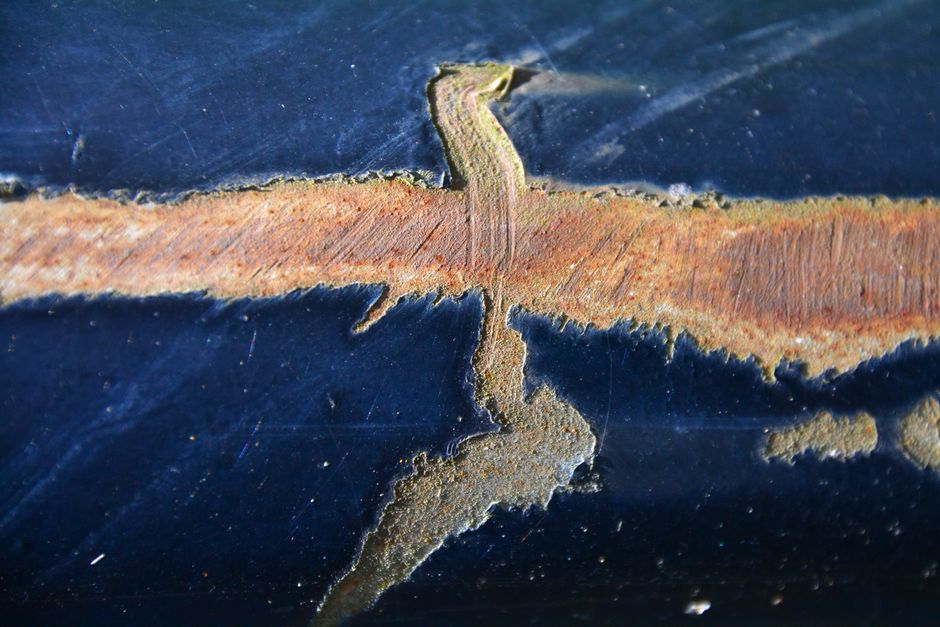

Manufacturing Defect Detection: A Realistic Evaluation
Why a 99% accurate defect detector can still be useless on the factory floor, and how to evaluate it honestly.

The seductive trap of accuracy
Say a factory produces 10,000 metal components a day and, historically, 200 of them (2%) carry a genuine surface defect: a scratch, a crack, a misaligned weld. You train a convolutional network to flag defective parts from camera images. It reports 99% accuracy on a held-out test set. Someone on the production team is thrilled. I would not be, and here is why.
A model that simply predicts 'no defect' for every single image achieves 98% accuracy on this line, without looking at a single pixel. Your 99% model is barely better than doing nothing, and it might be doing nothing in disguise: perhaps it flags one defect correctly and misses 150 others while making a handful of false alarms elsewhere, and the arithmetic still rounds to a headline number that looks excellent. Accuracy is dominated by the majority class, and in defect detection the majority class (good parts) is almost always overwhelming. This is not a subtle statistical footnote; it is the single most common way defect detection projects mislead their own stakeholders.
The fix starts with asking a sharper question than 'how often is the model right'. Ask instead: of the parts it flags as defective, how many actually are (precision), and of the parts that are actually defective, how many did it catch (recall)? These two numbers, not accuracy, tell you whether the system is fit for a production line, because the two failure modes have wildly different costs. A missed defect (false negative) might mean a faulty part reaches a customer. A false alarm (false positive) means a good part gets pulled for manual inspection, costing time but not safety or reputation. Confusing these costs, or reporting a single blended metric that hides them, is the first evaluation mistake I look for.
Worked intuition: precision, recall and the confusion matrix
Return to the 10,000 parts with 200 true defects. Suppose the model flags 300 parts as defective, and of those, 180 are genuinely defective. That gives a precision of 180/300, which is 60%, and a recall of 180/200, which is 90%. Now the picture is far more informative than '99% accurate'. The model catches 90% of real defects (good) but four in ten flagged parts are false alarms (a real inspection burden). Whether that trade-off is acceptable depends entirely on the cost structure of the line, which is a business decision, not a modelling one.
This is where the F-beta score earns its place, because it lets you encode that business decision explicitly rather than pretending one number fits every context. If a missed defect is far more costly than a wasted inspection, you weight recall more heavily using something like an F2 score; if inspection capacity is the real bottleneck, you might weight precision instead. I would rather present a stakeholder with a precision-recall curve and let them pick an operating threshold that matches their tolerance for each error type, than hand over a single scalar and imply it is objective.
Threshold choice matters more in defect detection than in many other computer vision tasks, because most models output a continuous score (probability of defect) that gets converted into a binary decision via a cutoff. Lowering the threshold catches more defects but raises false alarms; raising it does the opposite. Reporting a single accuracy figure silently bakes in one threshold choice, usually 0.5, which has no special status on a real production line. Reporting the full precision-recall curve, or at minimum the area under it, keeps that choice visible and adjustable.

Where the split leaks, the results lie
Even with the right metrics, an evaluation can still be dishonest if the train and test data are not truly independent, and in manufacturing imagery this happens constantly. Images of the same physical part are often captured from multiple angles or under repeated lighting conditions during data collection. If frames from the same defective part end up in both the training and test sets, purely by random shuffling, the model can partially memorise that part's specific texture or geometry rather than learning what defects look like in general. Test performance then looks excellent and collapses on the next batch of genuinely unseen parts.
The practical safeguard is to split by part identity, batch, or production run, never by individual image, whenever those groupings exist in your data. If a component was photographed six times, all six images belong entirely to train or entirely to test, never split across both. I treat this as a non-negotiable step before I even look at a model's numbers, because no amount of clever architecture compensates for a leaky evaluation; it just produces a more convincing wrong answer.
Temporal drift is the second, quieter leakage risk. Manufacturing lines change: lighting rigs get adjusted, camera lenses get swapped, suppliers change materials, and defect patterns themselves shift with tooling wear. A model validated on last month's data can degrade on this month's line without any coding error, simply because the distribution moved. A more realistic evaluation splits by time, training on earlier production runs and testing on later ones, which at least surfaces drift during development rather than after deployment. It is a less flattering number than a random split usually gives, and that is exactly why it is more useful.
A practical takeaway
Before trusting any defect detection result, I check three things in order. First, is the reported metric precision, recall, or a curve, rather than bare accuracy, given how skewed the class balance almost always is? Second, does the split respect part identity and, ideally, time, so that no information leaks between training and test in ways the deployed system will never enjoy? Third, is there an explicit, stated threshold and a business-informed reason for choosing it, rather than a default that nobody examined?
None of this requires exotic tooling. It requires discipline: writing the split logic before touching the model, computing a confusion matrix alongside any headline number, and being willing to report a less impressive but honest figure. A 90% recall at 60% precision, clearly stated, is a far more useful sentence than '99% accurate', because it actually tells the people running the line what will happen tomorrow morning.
